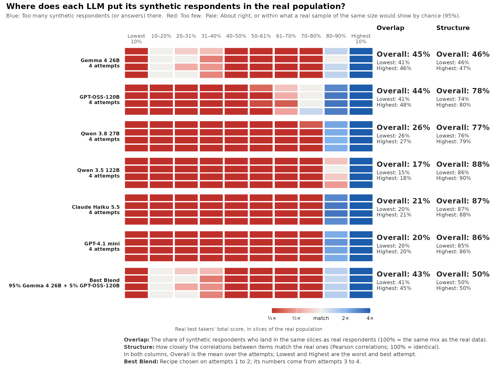
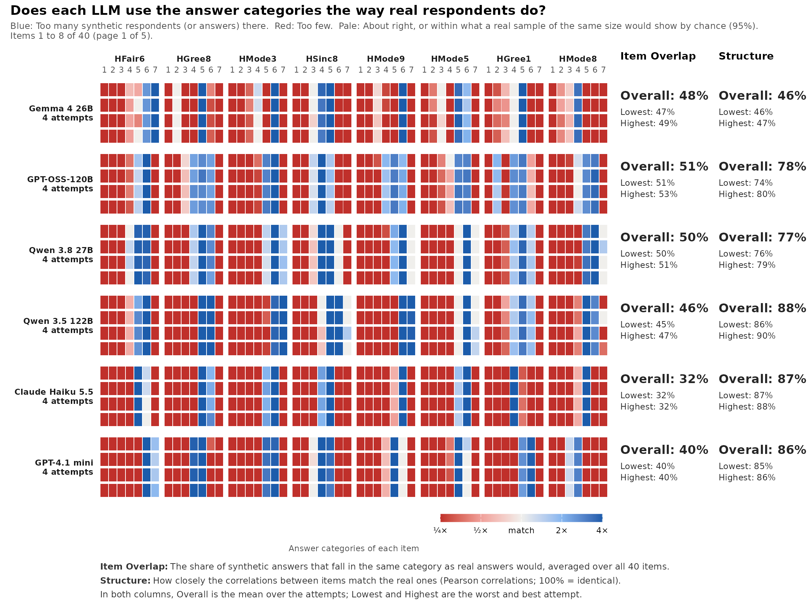

Overlap and Structure: The coverage strip
Source:vignettes/articles/overlap-structure.Rmd
overlap-structure.RmdExperimental. This tutorial walks through
synthetic_coverage(), gg_coverage() and
blend_llms(): Where synthetic respondents land compared
with real people (Overlap), and whether the items relate to each other
as they do in real people (Structure).
Keyed data in the shape synthcheck expects
synthetic_coverage() works on the answers you give it,
so key the reverse-keyed items first. HEXACO answers run from 1 to 7, so
a reverse-keyed answer x becomes 8 - x:
library(synthcheck)
h <- hexaco_items$item[hexaco_items$trait == "H"]
rev_items <- intersect(h, hexaco_items$item[hexaco_items$reverse])
keyed <- function(d) { d <- d[h]; d[rev_items] <- 8 - d[rev_items]; d }
real <- keyed(hexaco_real[hexaco_real$country == "Canada", ])
ca <- hexaco_llm[hexaco_llm$country == "Canada" & hexaco_llm$attempt <= 4, ]
synthetic <- lapply(as_synthetic_list(ca), function(m) lapply(m, keyed))
str(synthetic, max.level = 1)
#> List of 6
#> $ Gemma 4 26B :List of 4
#> $ GPT-OSS-120B :List of 4
#> $ Qwen 3.8 27B :List of 4
#> $ Qwen 3.5 122B :List of 4
#> $ Claude Haiku 5.5:List of 4
#> $ GPT-4.1 mini :List of 4Each model has four attempts. An attempt is one full run of the personas, so the spread over attempts shows how stable a model is.
The coverage strip
cov <- synthetic_coverage(synthetic, real, cor = "pearson")
cov
#> <sc_coverage> 6 model(s), 40 item(s), coverage of real total-score slices (EXPERIMENTAL)
#> model attempts overlap_overall overlap_lowest overlap_highest
#> Gemma 4 26B 4 45% 41% 46%
#> GPT-OSS-120B 4 44% 41% 48%
#> Qwen 3.8 27B 4 26% 26% 27%
#> Qwen 3.5 122B 4 17% 15% 18%
#> Claude Haiku 5.5 4 21% 20% 21%
#> GPT-4.1 mini 4 20% 20% 20%
#> Best Blend 2 43% 41% 45%
#> structure_overall structure_lowest structure_highest
#> 46% 46% 47%
#> 78% 74% 80%
#> 77% 76% 79%
#> 88% 86% 90%
#> 87% 87% 88%
#> 86% 85% 86%
#> 50% 50% 50%
#>
#> Best Blend: 95% Gemma 4 26B + 5% GPT-OSS-120B (chosen on attempts 1 to 2; its numbers come from attempts 3 to 4)
#>
#> * 1 real respondent(s) with missing answers are left out of the score
#> slices.
gg_coverage(cov)
The columns are the deciles of the real total score, so each holds about 10% of real people. A row is one model and attempt. Red cells hold fewer synthetic respondents than real people, blue cells hold more, and pale cells are a match within the noise of a real sample of the same size.
Here every model has a blue right end and a red left end: It piles its respondents into the top deciles of Honesty-Humility, so its synthetic people are more honest and humble than real Canadians. Gemma 4 26B spreads a little further down the scale than the others.
Overlap sums, slice by slice, the smaller of the synthetic and the real share. 100% is the same mix as the real data. Structure is 100% minus the mean absolute difference between the real and synthetic inter-item correlations.
cor = "pearson" is fast. With the polycor package
installed, the default cor = "auto" uses polychoric
correlations, which suit 7-point items better but take longer on many
items.
Other slices
slices changes what the columns are:
-
"score"(the default): Deciles of the real total score. -
"theta": Deciles of a unidimensional IRT score fitted to the real data. -
"group": One column per group, such as a country or a persona. -
"item": One column per answer category of each item, to see which categories a model avoids.
cov_items <- synthetic_coverage(synthetic, real, slices = "item", cor = "pearson",
blend = FALSE)
gg_coverage(cov_items, items_per_plot = 8)
Items are ordered from the worst Item Overlap. Most models rarely use the low categories that real people choose (red on the left of each item) and pile their answers into one or two categories (blue).
With a grouping column, within_group = TRUE compares the
shares within each group, so that the mix of groups does not count. Use
it when you set the number of synthetic respondents per group by
design.
The best blend
With two or more models, synthetic_coverage() also
searches for the mix of models that matches real people best.
cov$blend holds the recipe, and blend_llms()
searches again with other settings:
cov$blend$recipe
#> [1] "95% Gemma 4 26B + 5% GPT-OSS-120B"
b <- blend_llms(cov, step = 0.1, holdout = FALSE)
b$blend$weights
#> Gemma 4 26B GPT-OSS-120B Qwen 3.8 27B Qwen 3.5 122B
#> 0.3 0.7 0.0 0.0
#> Claude Haiku 5.5 GPT-4.1 mini
#> 0.0 0.0With four or more attempts per model, the recipe is chosen on half of the attempts and reported on the other half, so the blend’s numbers are not flattered by the search.
Next
Behaviour looks at how synthetic respondents answer, apart from what they answer.